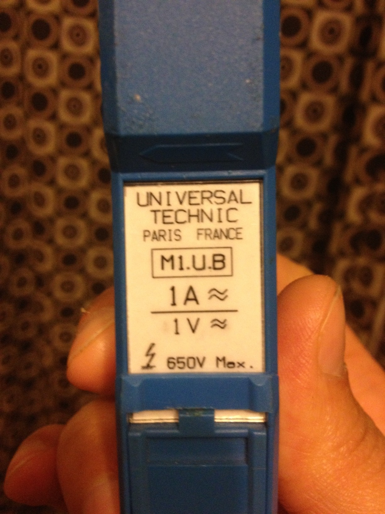

Hi,
I am implementing emon but require 14 CTs with single voltage using mega 2560. So i built the sensor board in stripboard, with 9V AC for voltage and CT1 being 1V/1A and CT2 and CT3 [other CTs to follow later] being the SCT 1V/1A ones. I am running into offset accuracy issues and have redone a new stripboard, then redone it on breadboard using Aurduino Uno Rev3 as well.
All the same nasty results!!!
I have a LM358 opamp for the CT biasing to 2.5V [running at 5V] and aim to have all the CTs biased from here. The voltage input [VAC] I had on the first stripboard to the opamp 2.5V bias but since have given it its own resistor divider. This does not help.
A0=VAC; A1=CT1; A2=CT2; etc.
When the CT and VAC is not connected I get about 0.3 Amps. When the VAC is connected and the CT isnt I get 0.6Amps. When I connect the CT the measured value is offset by 0.6Amps. this is the case for all 3 sensor bards I've developed so far.
Ive seen some forum posts on ADC charge pumps from VAC to CT, but wonder if the 0.6Amps Im getting can be caused by this?
Please help!! I have lost 3 nights rebuilding and retrying things. At first I thought mega, then stripboard, then cables, then sketch. And still nothing concrete to solve this problem.
Heres snippits from my sketch:
//A0 for VAC
ct1.voltage(0,227.602222,1.7); //calibration and phase shift - maybe 1.28 (not 1.7)phase shift as per theory?
//ct2.voltage(0,227.602222,1.7); //calibration and phase shift - maybe 1.28 (not 1.7)phase shift as per theory?
//ct3.voltage(0,227.602222,1.7); //calibration and phase shift - maybe 1.28 (not 1.7)phase shift as per theory?
//A1 for CT1
ct1.current(1,42.5); // CT channel 1, calibration. Custom calibration
//A2 for CT2
//ct2.current(2,30); // CT channel 2, calibration. built in burden resistor. therefore 30A gives 1V and constant = 30/1=30
//A3 for CT3
//ct3.current(4,30); // CT channel 3, calibration. built in burden resistor. therefore 30A gives 1V and constant = 30/1=30
and
//if(CT1){
//ct1.calcVI(20,2000);
//Serial3.println(ct1.Vrms);
Serial3.println(ct1.calcIrms(1480));
//ctPrint("ct1",ct1);
//Serial3.print(ct1.Irms);
//Serial3.print(" ");
//Serial3.println(ct1.Vrms);
Here is the stripboard design:
Edit - resized images - BT
Re: CT offset problem with opamp bias.
Your circuit is wrong - the 100 A c.t. MUST have a burden resistor - 4.4 MΩ is not correct. You also do not show a decoupling capacitor for the v.t. midpoint bias - you must have one; although its absence should not affect the current inputs, the voltage calibration is likely to be wrong.
I can't work out from what you've posted what the overall arrangement is and how you are connecting to the processor ADC inputs. The 0.6 A of 'phantom' current is almost certainly due to noise pickup somewhere, but from where I cannot tell. It may be from current circulating in the common connection to the analogue earth, it could be digital noise from the processor itself on the AVcc reference, it could be from your op.amp and it could be your 5 V supply.
Your starting point is, does it go away with the extension stripboard disconnected? If not, your 5 V supply is the first suspect.
It might help to have a small decoupling capacitor on the op.amp output. I'd try about 10 nF - 100 nF.
After that, you should work backwards through the calibration maths and find out how much voltage at the ADC input 0.6 A represents, then look at where that sort of voltage might be coming from.
The op. amp. should minimise the charge pump effect from one input to the next. In any case, that effect should account for nowhere near 0.6 A of apparent current.
Re: CT offset problem with opamp bias.
Hi Robert,
Thanks for the reply. The 100A ct has an internal burden presenting 1v output for every measured amp. The 100k-4.4M is a voltage dividor to get the ct voltage output down to arduino level. is this still wrong then?
yip you're right. I'll add the decoupling cap to the vt input.
The 10 way cable connects directly to processor adc inputs as well as the 5v and Gnd taken from the arduino board.
Ill try a smaller opamp decoupling cap and post results from there. I'll measure the 5v and opamp output as well. Thanks
Re: CT offset problem with opamp bias.
Hi Here are the prints from the different options measuring Amps on the CT1 input [AI1]:
Mega with no stripboard connected:
Mega with stripboard but no CT or VT connected:
Mega- stripboard with VT connected but no CT:
Mega- stripboard with VT connected and CT connected [actual measure about 1.2Amps] :
Mega- stripboard with no VT and CT connected:
Mega- stripboard with no VT and no CT - wired in Vref and opamp out onto analog pins through stripboard - done 100 analog reads [Vref - first column Opamp out = second column] :
Re: CT offset problem with opamp bias.
"The 100A ct has an internal burden presenting 1v output for every measured amp."
I don't believe that for one minute. It implies 100 V output at full load. A current transformer does what it says - it drives a current into a burden resistor. For any reasonably sized c.t. the current would have to be uselessly small (about 1 mA per 100 A, i.e. with 100,000 turns on the secondary) to give you 100 V before it overloaded. I think you misread the data sheet for the c.t. Can you post a link to the data sheet? It's much more likely that it is 1 V at full load.
"Ill try a smaller opamp decoupling cap" No, you keep what you have on the voltage divider at the non-inverting input, I wrote "on the OUTPUT" - this is in case the op.amp is unstable and introducing h.f. noise.
Re: CT offset problem with opamp bias.
You posted while I was typing. Your Vcc and Vcc/2 appear to be relatively stable to within about 10 mV (2 counts - I hope those are raw figures and there's no averaging), yet assuming your calibration gives you 100 A for 5 V p-p in, the noise/pickup amounts to about 75 mV p-p equivalent sine wave. The high input impedance of the ADC input shows a high level of pickup that seems to indicate that most of it is coming from the digital circuits inside the processor itself. Can you try a 100 nF or so from the ADC input pin to ground?
Re: CT offset problem with opamp bias.
Hi,
Its actually a 200A CT. Here is a snap and the datasheet.

http://openenergymonitor.org/emon/sites/default/files/High Res CT Datasheet.pdf
I have a 60 Amp breaker on my meter so I assumed that I should never get more than 100A [rounded up from 60A :)] on the main CT line. Hence the reference to 100A. The voltage divider on the CT curcuit therefore has a ratio of 100:2.5.
Yip the Vcc and Vcc/2 are raw values using serial.print(analogRead(3)).
Busy building the other requested circuits now. Watch this space....
Re: CT offset problem with opamp bias.
Are you sure that CT isn't 1A a/c (max) = 1V a/c ? The data sheet doesn't seem to show a 200A part in the M1.UB range.
edited to say, maybe I'm misreading the datasheet but I would have thought that if they have parts specified as 200A/2Vac and 200A/10Vac then your part should be marked 200A/200Vac? Which, as Robert says, is an unlikely part.
Re: CT offset problem with opamp bias.
Indeed, that's the conclusion I've just come to as well. The bad news is you have a 1 A c.t. You'll measure up to 1 A accurately, then probably at about 1.2 A it will start to saturate and you'll get nothing much above 1.5 V out with a horribly distorted waveform, no matter how much more current you have flowing.
If you want one of this series, it's the M246 - 50 A, 2 V a.c version that you need, which should be good to about 44 A - that's 10 kW before the ADC input clips.
Re: CT offset problem with opamp bias.
Hi, I made the following changes to the stripboard extension:
- VAC now has 10uf decoupling capacitor for the v.t. midpoint bias
- 100nf between opamp output and Gnd.
I wasnt sure what you meant when you said "Can you try a 100 nF or so from the ADC input pin to ground?"
Did you meant with the stripboard extension disconnected directly onto mega? Or with stripboard and no VT or CT inputs?
Heres the Irms for stripboard disconnected with 100nf between ADC and GND:
0.10
0.10
0.08
0.10
0.10
0.08
0.10
0.10
0.08
0.10
0.10
0.09
0.11
0.07
0.10
0.10
0.08
0.11
0.06
0.09
0.09
0.09
0.10
0.08
Heres the same with stripboard connected:
0.13
0.12
0.12
0.14
0.14
0.12
0.12
0.12
0.12
0.12
0.11
0.10
0.08
0.12
0.12
0.12
0.12
0.11
0.12
0.13
0.13
I modded as above stripboard.
And just to make things a bit weirder, I get very different readings when the stripboard is suspended in air from the cable:
0.41
0.41
0.41
0.41
0.42
0.41
0.41
0.45
0.43
0.40
0.44
0.44
0.44
0.45
0.45
0.46
0.44
And these are when I place the stripboard on a cardboard box:
0.13
0.12
0.12
0.12
0.12
0.13
0.12
0.12
0.12
0.12
0.13
0.12
0.12
0.13
0.13
0.13
0.12
0.12
0.13
0.12
0.14
Re: CT offset problem with opamp bias.
The second sketch on my Summary Page is called MinMaxAndRangeChecker. When run on an Arduino or emonTx, it displays the basic data that's recorded by the first four of the analog inputs. If your hardware is set up correctly, you should see a value of around 512 for each channel that is being actively held at the mid-rail point. When AC signals are applied, you can verify that the sample values change as expected.
This sketch will allow you to check the operation of your input circuits in isolation from any other aspects. Many problems with complex schemes have been found to be caused by basic setup faults of the input circuits.
As you're able to measure AC Voltage too, why not try my RawSamplesTool (the next one down the page). If your sensor is set up correctly, this will display a sinusoid on the Serial Monitor.
Hope this helps.
Re: CT offset problem with opamp bias.
Now I've had time to think about it, the basic problem is nubble thought he'd got a 100 A c.t. when he has a 1 A one with a 1 V output, he is dividing the output down by 45:1 and feeding it into a 5 V ADC input, with a current calibration constant of 42.5.
The current calibration ought to be 1 for that c.t, so with no current and only noise for the input, he's actually indicating current 42.5 times what he should have. But he's dividing the real current by 45 before it gets to the ADC input, so that's actually reading about right. So if I've done my sums correctly, his input noise is equivalent to about 33 mA (or 8 W) were he using a standard SCT-013-000 c.t which is on the good side of what we expect.
So I think there's really nothing wrong with his input circuitry or build at all - it's all down to the wrong choice of c.t. and calibration due to a misunderstanding.
Re: CT offset problem with opamp bias.
Hi,
Thanks for the information and sheddling some light on this. I would gladly have bought you all a round of beers for this when I had my head in my hands fretting about this input noise. Robert Wall, thanks for taking the time to think about this.
Ok, Im now convinced after your posts and re-reading the datasheet that this is a 1A ct. In saying that when I was prototyping on breadboard, I was able to measure up to a little over 4kW or 22 Amps with that ct. And I clearly recall measuring the AC voltage with the CT connected and values over 10V AC come to mind. Whether theyre accurate [and not ct saturating] is another question. The data sheet does say "overload most of the time without consequence" and the CT does have a intermediate transformer as below:
For info here is my emoncms dashboard with that ct:
Now to the online shop for a 100A CT. I have a few SCT-013-030 which I could use for now based on the above load profile.
Calypso-Rae, I donwloaded your RawSamplesTool yesterday but never got around to trying it out. Now I see your Summary page and WOW!!! This is awesome and exactly the type of tools needed for debugging and analytics. Already bookmarked!
Robert Wall, Thanks for all the help again.
Much appreciated.
Re: CT offset problem with opamp bias.
nubble: Calypso-Rae, I donwloaded your RawSamplesTool yesterday but never got around to trying it out. Now I see your Summary page and WOW!!! This is awesome and exactly the type of tools needed for debugging and analytics. Already bookmarked!
Glad you approve :)
My Summary Page has been awarded 'sticky' status so can always be found at the top of the General section of the forum.
Re: CT offset problem with opamp bias.
For what it's worth, I believe - I don't know for certain - that the 100 A c.t. and the 30 A c.t are the same beast, the difference being the 30 A one has an inbuilt burden and the 100 A one has a pair of zener diodes for overvoltage protection but no burden resistor. It's quite easy to take the c.t. apart and change the burden resistor(s) (sometimes they put two in series to calibrate to the correct voltage), or indeed you can put a pair of zeners there instead and use a burden on your stripboard. I have to repeat my regular warning here: NEVER open-circuit the secondary of a c.t. You can get very high voltages out that might damage the secondary winding, even if they don't get your fingers. If you're contemplating this, read the test report on the 100 A c.t. first. If you're removing the internal burden and having an external one, you don't need 22 V zeners - any value you have to hand 6.8 V or above should be good enough.
Re: CT offset problem with opamp bias.
Just a quick question in regards to building your own CT measuring circuits as above, I am going the Op Amp route for biasing as well (did that one the AC Voltage), I have an accurate source for 5V.
Does each CT have to have its own bias source or can one connect multiple CT to the same output of the Op Amp as above? On the EmonTxShield V2.5 schematic, each CT has its own biasing (via resister Voltage Divider), so using an Op Amp means one op amp output can bias all the CT's?
Or should I have an Op Amp Bias for each CT?
Thanks.
Re: CT offset problem with opamp bias.
You can use the same op-amp for all inputs - the voltage and all the CTs.